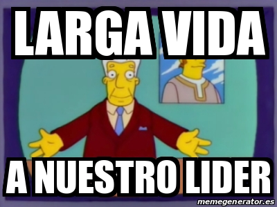

En esta clase, se realizaron las exposiciones de carreras universitarias por parte de los compañeros del grupo 1.
Pero antes de pasar al carrusel, realizamos una charla entre todos. Donde comentamos noticias Y
demás situaciones que estan ocurriendo en este momento, en Colombia y el mundo.
Yo propuse hablar acerca de la nueva reforma tributaria, que estaba proponiendo el en ese momento futuro presideten de Colombia. Ya que en lo personal me parece un tema
muy importante y del cual todo joven debe tener conocimiento, ya que esos tributos serán con los que nosotros tendremos que afrontar ese paso a la vida adulta.
Ingeniería matemática
Ingeniería de sistemas
Todas la feria de los compañeros del grupo 1 estuvo muy interesante. Conocí varias carreras a las que nunca les habia prestado antención y es entretenido saber que hay tantas oportunidades para que todos encuentren su carrera, una que le guste y le llame la atención de verdad. Aunque no lo vaya a estudiar hubieron dos que me llamaron mucho la atención, ya que las personas que lo exponian, demostraban mucho el interés que tenían en el tema. Estos dos grupos fueron los de ingeniería agronomica y los de artes.
Otra de las cosas que hicimos en esta clase, fue la distribución de temas y bases que se realizarán en nuestra feria de vida la próxima semana. Yo mismo me propuse como líder de la base de métodos de aprendizaje y cómo aprendes ya que es un tema de suma importancia para el autoconocimiendo de los jovenes, y también es el tema que consulté de los dados en la clase anterior.
